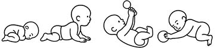

Rozdział 3
Fizjoprofilaktyka –
prawidłowa postawa ciała
Artur Polczyk
Samodzielna Pracownia Edukacji Medycznej i Symulacji w Fizjoterapii, Uniwersytet Medyczny im. Piastów Śląskich we Wrocławiu
Postawa ciała podąża za ruchem jak cień.
Charles Sherrington
3.1. Postawa ciała człowieka, jej rozwój i najczęstsze typy wad
Ruch towarzyszy naszemu ciału od zapłodnienia i jest w stanie zastąpić prawie każdy lek, ale wszystkie leki razem wzięte nie zastąpią ruchu – na co wskazywał już w XVI w. dr Wojciech Oczko.1 Nasza postawa ewoluuje wraz z wiekiem, zgodnie z ontogenetycznymi globalnymi wzorcami oraz zmieniającymi się potrzebami mentalnymi rozwijającego się dziecka. Noworodek przychodząc na świat, wykazuje się pozycją zgięciową w większości swoich stawów, z każdym kolejnym tygodniem życia w coraz bardziej zaawansowany sposób steruje postawą ciała, podpierając się na łokciach w okolicy 12. t.ż., chwytając pierwszy raz zabawkę od boku w okolicy 16. t.ż., by wreszcie pierwszy raz samodzielnie zmienić swoją pozycję z leżenia tyłem do leżenia przodem po ukończeniu pierwszego półrocza życia (rycina V.3.1).
Konsekwencją dalszego dojrzewania ośrodkowego układu nerwowego i co za tym idzie większych potrzeb niemowlęcia jest przyjmowanie coraz wyższych pozycji, w tym siadu prostego czy pierwszych prób wstawania pomiędzy 8. a 10 m.ż. W trakcie tych dynamicznych zmian wzorców ruchowych w 1. r.ż. dziecka możliwe jest zaobserwowanie, jak duży wpływ na zakres ruchomości, precyzję ruchów, w tym możliwość fiksacji wzorkowej, chwytu czy stabilnych pierwszych kroków małego człowieka w pozycji pionowej, ma nasz centralny narząd ruchu, jakim jest kręgosłup (rycina V.3.2).

Rycina V.3.1.
Zmiana postawy i możliwości sterowania ciałem dziecka w pierwszym półroczu jego życia – od zgięciowej pozycji noworodka, przez symetryczny podpór na łokciach, chwyt boczny, po samodzielny obrót z pozycji leżenia tyłem do leżenia przodem